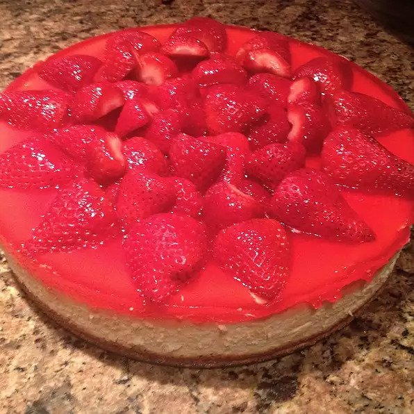

Cheesecake

Description
This is a very creamy cheesecake. It's delicious plain, or you may top with fruit pie filling.
Ingredients
- 1 (9 inch) prepared shortbread pie crust
- 2 (8 ounce) packages cream cheese
- 1 cup white sugar
- 2 eggs
- 2 teaspoons vanilla extract
- 1 cup sour cream
Steps
- Preheat oven to 325 degrees F (165 degrees C).
- Cream together cream cheese and sugar. Add eggs one at time, blending well. Add vanilla and sour cream.
- Pour into shortbread crust.
- Bake for 60 to 70 minutes in the preheated oven, or until cake jiggles evenly across the top when lightly shaken.
- Run a knife around the outside edge, but leave the cake in the pan. Let cool on counter, then place in refrigerator.
- Remove from pan when completely chilled, and serve.